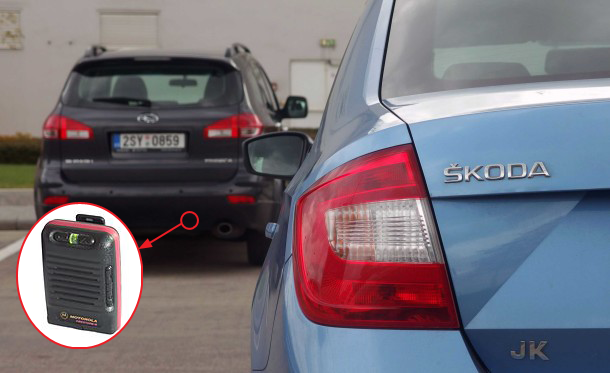

Sinon
In Practice
Spies
Secretly monitor existing function
test("launch calls missile.engage() with 'meltdown' argument", function () {
sinon.spy(missile, 'engage'); // attach spy
launch();
strictEqual(missile.engage.called, true);
strictEqual(missile.engage.getCall(0).args[0], 'meltdown');
missile.engage.restore(); // remove spy
});
Stubs
Take over behaviour of existing function
test("greeting is 'Hello Earthlings' when Date.now is morning", function () {
sinon.stub(Date, 'now').returns('morning'); // attach stub
var result = greeting();
strictEqual(result, 'Hello Earthlings');
Date.now.restore(); // remove stub
});
Stubs
Take over behaviour of existing function
test("greeting is 'Does not compute' when Date.now throws an exception", function () {
var nowStub = sinon.stub(Date, 'now'); // attach stub
nowStub.throws();
var result = greeting();
strictEqual(result, 'Does not compute');
nowStub.restore(); // remove stub
});
Exercises
- Toy exercise: jsbin.com/roxog/1/edit
- Backbone router: jsbin.com/zikoc/1/edit
Verifying Events
Spies can also be used as event callbacks
test("menu.open triggers menuOpened event", function () {
var mySpy = sinon.spy(); // create a spy
jQuery.on('menuOpened', mySpy);
menu.open();
strictEqual(mySpy.called, true);
});
Exercise
- Turn.js: jsbin.com/kuxoxe/1/edit
Mocking AJAX
- Setup fake response
- Deliver fake response
test("getSuggestions makes an AJAX request", function () {
var myServer = sinon.fakeServer.create(),
suggestionsRoute = new RegExp('/suggestions/.+');
// step 1
myServer.respondWith('GET', suggestionsRoute,
[200, { 'Content-Type': 'application/json' },
'[{ "suggestions": ["dog", "cat"], "confidence": "95%" }]']);
getSuggestions();
myServer.respond(); // don't forget step 2!
strictEqual(myServer.requests.length, 1);
strictEqual(myServer.requests[0].method, 'GET');
myServer.restore();
});
Exercise
- Toy exercise: jsbin.com/vorizo/1/edit
Asynchronous program flow
Some actions produce results only much later
- Network requests
- Writing to filesystem or database
- Complicated mathematical calculations
- Animations
Async Tests
var addStickyNote = function (message) {
var fadeInDuration = 1500; // milliseconds
fadeIn(message, fadeInDuration);
};
asyncTest("addStickyNote makes message disappear", function () {
addStickyNote('hello world');
setTimeout(function () {
// this function body is run after 1500ms delay
// assert message has appeared
start(); // resume QUnit execution
}, 1500);
});
Exercise
- Bloodhound: jsbin.com/bomocu/2/edit
Manipulating time
Accelerates time for functions that use setTimeout
test("menu.open triggers menuOpened event after an animation", function () {
var timeMachine = sinon.useFakeTimers(),
mySpy = sinon.spy();
jQuery.on('menuOpened', mySpy);
menu.open();
timeMachine.tick(1000); // fast-forward 1000 milliseconds
strictEqual(mySpy.called, true);
timeMachine.restore();
});
Example
Video.js https://github.com/videojs/video.js/blob/stable/test/unit/media.js
Sinon Essentials
- Spies
- Stubs
- Fake callbacks
- Fake server
- Fake timers
Credits
Images (in order of appearance)
- TW Hoon, "Car Tracker", CC Attribution 4.0 International. Composite created from the following 2 images;
- LibreShot.com, "Rear lights of car. Blue Škoda Octavia.", http://libreshot.com/vehicles/cars/, CC0 Public Domain;
- Stefan-Xp, "Digitaler Meldeempfänger", https://de.wikipedia.org/wiki/Funkmeldeempf%C3%A4nger#/media/File:Funkmeldeempf%C3%A4nger_Motorola_Firestorm_3.jpg, CC Attribution-ShareAlike 3.0 Unported;
- Nathan Rupert, "Futurama Brain Slug", https://www.flickr.com/photos/nathaninsandiego/4834246209/, CC Attribution-NonCommercial-NoDerivs 2.0;

This work is licensed under a Creative Commons Attribution 4.0 International License.
Suggestions or errata? Contact TW Hoon at GitHub (username: hoontw).